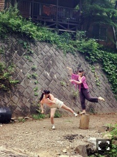

| 2014/08 30 Sat | 陽気なる天使よ。596 回目 |
さゆりん、琴子
お誕生日おめでとう！

名古屋公演ありがとうございました。
朝は味噌カツサンド食べて
昼はきしめん食べて幸せだたなあ。
会場も盛り上がりました！
そして、
いくちゃん救出劇は
まだまだ続くのであった。
昼公演で発表がありました、
アンダーライブ2ndシーズン。
やる気充分だよ〜
全体としてクオリティーの高いものに
していきたいのはもちろん
個々の課題も少しずつ
クリアしていかなきゃ！

明日はついについに
明治神宮球場公演になります。
ツアーラスト！
今年の夏のいちばんの
思い出になりますように。
楽しみましょう！
団扇もタオルも見るぞ〜
見つけちゃうぞ〜
頭が破裂しそうだーー
ああああお願いだから晴れて〜
いや、晴れすぎないで〜
ちょうど良い気温であれ〜
念のためにレインコートを。。
明日発売になります
まいやん表紙のBUBKA！
会場に行く前にふらっと
本屋に立ち寄ってチェックしてね。
行く前に読んだら、
ライブへのドキドキ感をさらに
高めることができるであろう。
熊坂出さんの小説第三弾公開！
今回が最終回です。
表紙絵描かせていただきました。
涙腺緩んだ。
考え込んでなかなか絵を描くことが
できずにいましたが、
やっと描きました。
終わってしまったの少し寂しいけど、
監督に感謝しかないです。
絵を描く機会をくださって
ありがとうございました！
素敵な小説の上に自分の感性だけで
描いたものが表紙となるなんて、
本当に夢のようでした。
いろんなものに触れて、
たくさんの刺激を受けて、
そして作品をコツコツ貯めよう。
『神隠しのボレロ』
まだ読んだことがない方は、
ぜひ第一弾から読んでくださいっ
のぎ天と、
3周年記念スペシャルサイト
動画見てねっ

私と日芽香の関係
さ、寝る前に確認確認。
まりか
コメント(502)
2014/08/30 00:00